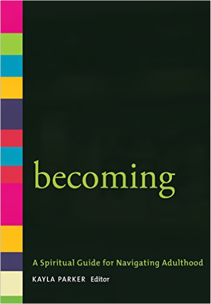
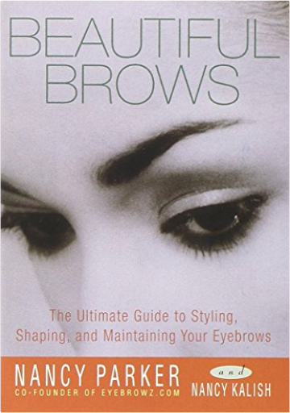
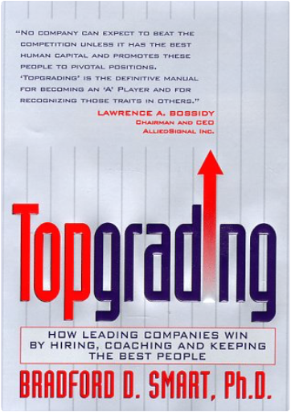
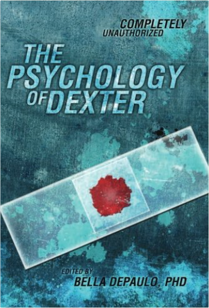
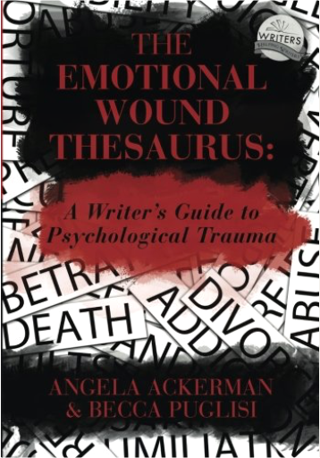

 Becoming: A Spiritual Guide for Navigating AdulthoodKayla Parker This elegant volume offers itself as a spiritual companion for young adults and all who live amid transitions and tensions.
Dozens of carefully selected readings address themes that are prominent for people in their twenties and early thirties. The topics include:
Passion and purposeIdentityCommunityLosing and findingJustice and creation
Each section features reflections from Unitarian Universalist young adults, as well as poems, prayers, and opening and closing words from contemporary and ancient peoples. This treasury of uplifting and thought-provoking meditations can serve as a guide and provide comfort on our never-ending journey of becoming.  Beautiful Brows: The Ultimate Guide to Styling, Shaping, and Maintaining Your EyebrowsNancy Parker, Nancy Kalish Put Your Best Face Forward!
How many times have you plucked, waxed, trimmed, stenciled, or penciled your eyebrows — or paid someone else to do it for you? It's hard to control the outcome of these methods when you're at home standing in front of a mirror or in a salon letting a stranger make the decisions for you. Now whether you do it yourself or go to a pro, Beautiful Brows puts you in control:
Discover the best brow shape for your face.
Learn what to do with too much or too little hair.
Determine the pros and cons of waxing vs. tweezing.
Maintain your new look.
Filled with illustrations and easy-to-follow instructions, Beautiful Brows will show you the secrets for getting the look you want, whether it's sexy, elegant, polished, professional, or just plain beautiful. ExpelledJames Patterson One viral photo.Four expelled teens.Everyone's a suspect.
Theo Foster's Twitter account used to be anonymous—until someone posted a revealing photo that got him expelled. No final grade. No future. No fair.
Theo's resigned to a life of misery working at the local mini-mart when a miracle happens: Sasha Ellis speaks to him. Sasha Ellis knows his name. She was also expelled for a crime she didn't commit, and now he has the perfect way to get her attention: find out who set them up.
To uncover the truth, Theo has to get close to the suspects: the hacker, the quarterback, the mean girl, the vice principal, and his own best friend. What secrets are they hiding? And how can Theo catch their confessions on camera? Maximum Ride: The Manga, Vol. 1James Patterson Fourteen-year-old Maximum Ride knows what it's like to soar above the world. She and all the members of her "flock" - Fang, Iggy, Nudge, Gasman, and Angel - are just like ordinary kids, except they have wings and can fly! It may seem like a dream come true to some, but for the flock it's more like a living nightmare. When the mysterious lab known as the "School" turns up and kidnaps their youngest member, it's up to Max to organize a rescue, but will help come in time? Shugo Chara 1Peach-Pit WHO DO YOU WANT TO BE?
Everybody at Seiyo Elementary thinks that stylish and super cool Amu has it all: But nobody knows the real Amu, a shy girl who wishes she had the courage to truly be herself. Changing Amu’s life is going to take more than wishes and dreams–it’s going to take a little magic! One morning, Amu finds a surprise in her bed: three strange little eggs. Each egg contains a Guardian Character, an angel-like being who can give her the power to be someone new. With the help of her Guardian Characters, Amu is about to discover that her true self is even more amazing than she ever dreamed.
This volume of Shugo Chara! includes special extras after the story! Shugo Chara 3Peach-Pit CAN A BAD GUY TURN GOOD?
Amu’s Guardian Characters have been stolen by her teacher, a bitter man whose dreams died when his own egg was smashed. When Amu goes to reclaim her Characters, the School Guardians are there to help. But can they get Amu’s eggs back and put the evil teacher’s egg together again?
This volume of Shugo Chara! includes special extras after the story! | Shugo Chara! 2Peach-Pit FRIENDS IN NEED
Cute schoolgirl Amu has a secret: She has three magical companions. Only these enchanted Guardians know who Amu’s true self is, and they’ll do anything to help her unlock her heart! They’re searching for a magic egg, a powerful weapon that could mean trouble in the wrong hands. To find this egg, Amu will have to change her life–and finally learn to be true to herself.
Includes special extras after the story!
[Rating logo:] Ages 13+  Topgrading: How Leading Companies Win by Hiring, Coaching and Keeping the Best PeopleBradford D. Smart Ph.D. World renowned consultant and industrial psychologist shares his proven strategy for hiring "A" players, building dream teams, and achieving excellence—a fool-proof system now in place at today's leading companies. Great companies are made, not born. The secret is hiring the right people—the "A" players. This is, of course, easier said than done. Statistically, half of all employment situations result in a mis-hire; the wrong person for the wrong job. And with the cost of a mis-hire at twenty-four times salary, the financial drain can be staggering! Compare that with Brad Smart's 90% success rate and understand why topgraded organizations such as General Electric and Allied Signal consistently beat the competition. In this unparalleled work, Dr. Smart introduces readers to the tograding concept—how and why it works. The author sets forth principles which hold true for Fortune 500 companies as well as small emerging companies. Topgrading is a silver bullet—the corporate initiative that empowers all other corporate initiatives. The author spells out his practical hands-on approach and provides intriguing case studies culled from his file of more than 4,000 in-depth interviews. Topgrading's expert coaching techniques are also revealed and readers learn how managers who topgrade become leaders, achieving success and excellence not only for their companies, but also for themselves. This book is not without controversy, however, as Brad discusses how those who don't pull their own weight, the chronic "C" players, must step aside, be redeployed, or terminated. Steroids and Doping in Sports: A Reference HandbookDavid E. Newton Ph.D. The use of performance-enhancing drug use in sports is never out of the news, whether it's cycling, baseball, Olympic sports, or mixed martial arts. Interestingly, the use of steroids to boost human performance stretches back to ancient times. Written by a former professor of chemistry, Steroids and Doping in Sports: A Reference Handbook provides not only information about all aspects of performance-enhancing drugs in sport, but also supplies a thorough, scientific background about the drugs themselves—the chemistry and biology of steroids, what scientists have learned about these substances, and the specific ways in which they affect the human body.
The author documents the cat-and-mouse actions of the athletes and those who supply them with performance-enhancing drugs to push the envelope, and of the sport and athletic groups—such as the NCAA and the International Cycling Union—that try to monitor and control such drug use. The work also includes a chapter containing snapshot profiles of many individuals involved in steroid use scandals and organizations with an interest in topics related to steroid abuse.  The Psychology of DexterBella DePaulo PhD Dexter Morgan: Police forensic analyst. Family man. Serial killer. And the star of Showtime’s most-watched series, Dexter.
Aimed at Dexter devotees and armchair psychologists, The Psychology of Dexter takes on the psychological complexities of the popular series with an eye towards insight and accessibility. It analyzes not just the title character, but his family, coworkers, and even his viewers. What makes Dexter tick? And what makes a show about a serial killer so appealing to those of us at home?
From the implications of faking normalcy (could it be behind Dexter’s still-in-progress emotional growth?) to where the show weighs in on the psychological debate between nature and nurture, The Psychology of Dexter gives fans a peek inside Dexter’sand Dexter’spsyche. How To Run The European ParliamentMarilyn Political DESCRIPTION AND REVIEWS BY POLITICAL LEADERS:
How do you gain influence and publicity in the European Parliament? How do you compete successfully with the Council and the Commission? How can you use reporters and lobbyists to advance your political career?
How to Run the European Parliament offers a unique look behind the scenes and reveals the secret tactics and manoeuvres Members of the European Parliament need to master in order to prevail.
This brutally honest tutorial is a must-read for all MEPs, assistants, public servants, lobbyists, and journalists who want to understand how power politics is played.
JACEK SARYUSZ-WOLSKI | Vice-President of the European People’s Party
“Achieving success as an MEP, both nationally and within the EU, requires many skills - mastering the nuances of the legislative process, negotiating with impact, building networks, maximizing support and votes, organizing day-to-day functioning with optimal results, and many more. Marilyn Political's insightful tutorial captures these nuances in one book that every aspiring MEP and his collaborators should read.”
ALEXANDER GRAF LAMBSDORFF | Vice-President of the European Parliament
“Unique and impressive. An absolute must-read for all new Members of the European Parliament.”
PETRI SARVAMAA | Vice-Chair of the European Parliament’s Committee on Budgets
“Astonishing read! It's merciless, unforgiving, and so true. As an MEP I could not imagine a better guide into ways of influencing political decision-making in Brussels. I regularly go back to the advice of the book. And I make sure all my advisers and assistants know the text by heart.”
MARKUS FERBER | Vice-Chair of the European Parliament’s Committee on Economic and Monetary Affairs
“How to Run the European Parliament provides an informed insight on what happens behind the curtains. From negotiation strategies to shaping public perceptions - this book is the perfect read if you want to gain an in-depth understanding of how European policy making actually works.”
LINNÉA ENGSTRÖM | Vice-Chair of the European Parliament’s Committee on Fisheries
“This book will teach you the mind-set and psychology of the European Parliament. Being a European politician means: relying on good advisers and having the confidence and strength to be patient, generous, and trustworthy. The road to success lies in hard work - and making the right choices. This book will give you exactly the push you need, and the direction to set you on the right path.”
ANDREY NOVAKOV | Member of the European Parliament
“One of the most get-to-the-point, useful, and must-have political books I have in my library.”
IVAN ŠTEFANEC | Member of the European Parliament
“The book is a very useful and enjoyable reading, particularly for newcomers to the European Parliament. It is a good overview of parliamentarian activities. It reassured me about what I was doing right and where I should improve.”
JONÁS FERNÁNDEZ | Member of the European Parliament
“This book makes for fascinating - and funny - reading. More importantly, it is quite useful, particularly for newcomers. I highly recommend it to any new MEP as absolutely essential. It provides quite a number of practical suggestions, and not to be underestimated, a fair amount of laughing, something that should never be in short supply when working at the European Parliament.”
SANDER LOONES | Vice-Chair of the European Parliament’s Committee on Economic and Monetary Affairs
“The European House of Cards, but with a healthy portion of pragmatism.”
LOOK INSIDE THE BOOK:
www.marilynpolitical.com/publications  The Emotional Wound Thesaurus: A Writer's Guide to Psychological TraumaBecca Puglisi, Angela Ackerman Readers connect to characters with depth, ones who have experienced life’s ups and downs. To deliver key players that are both realistic and compelling, writers must know them intimately—not only who they are in the present story, but also what made them that way. Of all the formative experiences in a character’s past, none are more destructive than emotional wounds. The aftershocks of trauma can change who they are, alter what they believe, and sabotage their ability to achieve meaningful goals, all of which will affect the trajectory of your story. Identifying the backstory wound is crucial to understanding how it will shape your character’s behavior, and The Emotional Wound Thesaurus can help. Inside, you’ll find: • A database of traumatic situations common to the human experience • An in-depth study on a wound’s impact, including the fears, lies, personality shifts, and dysfunctional behaviors that can arise from different painful events • An extensive analysis of character arc and how the wound and any resulting unmet needs fit into it • Techniques on how to show the past experience to readers in a way that is both engaging and revelatory while avoiding the pitfalls of info dumps and telling • A showcase of popular characters and how their traumatic experiences reshaped them, leading to very specific story goals • A Backstory Wound Profile tool that will enable you to document your characters’ negative past experiences and the aftereffects Root your characters in reality by giving them an authentic wound that causes difficulties and prompts them to strive for inner growth to overcome it. With its easy-to-read format and over 100 entries packed with information, The Emotional Wound Thesaurus is a crash course in psychology for creating characters that feel incredibly real to readers. Crash Override: How Gamergate (Nearly) Destroyed My Life, and How We Can Win the Fight Against Online HateZoe Quinn You've heard the stories about the dark side of the internet—hackers, #gamergate, anonymous mobs attacking an unlucky victim, and revenge porn—but they remain just that: stories. Surely these things would never happen to you.
Zoe Quinn used to feel the same way. She is a video game developer whose ex-boyfriend published a crazed blog post cobbled together from private information, half-truths, and outright fictions, along with a rallying cry to the online hordes to go after her. They answered in the form of a so-called movement known as #gamergate—they hacked her accounts; stole nude photos of her; harassed her family, friends, and colleagues; and threatened to rape and murder her. But instead of shrinking into silence as the online mobs wanted her to, she raised her voice and spoke out against this vicious online culture and for making the internet a safer place for everyone.
In the years since #gamergate, Quinn has helped thousands of people with her advocacy and online-abuse crisis resource Crash Override Network. From locking down victims' personal accounts to working with tech companies and lawmakers to inform policy, she has firsthand knowledge about every angle of online abuse, what powerful institutions are (and aren't) doing about it, and how we can protect our digital spaces and selves.
Crash Override offers an up-close look inside the controversy, threats, and social and cultural battles that started in the far corners of the internet and have since permeated our online lives. Through her story—as target and as activist—Quinn provides a human look at the ways the internet impacts our lives and culture, along with practical advice for keeping yourself and others safe online. |


 Made with Delicious Library
Made with Delicious Library